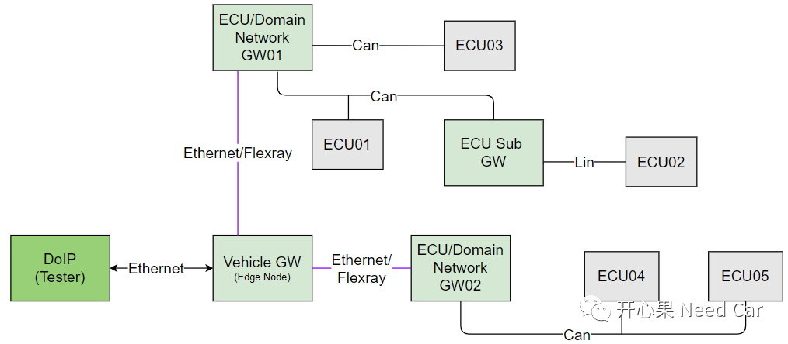
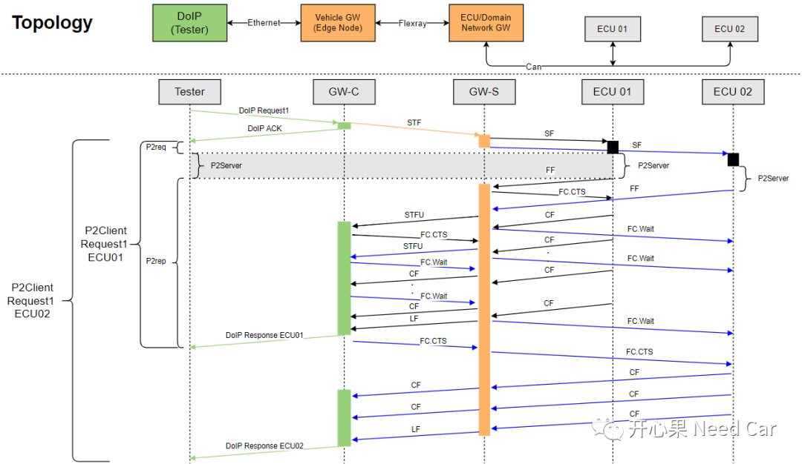
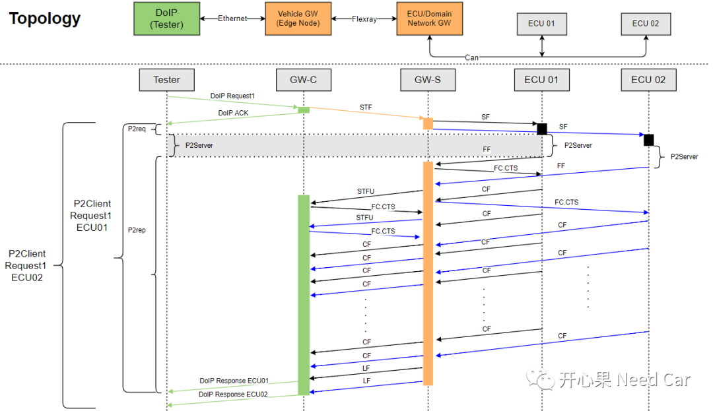

我们知道，一辆车上的ECU数量少则几十个，多则上百个。假设这样一种场景，车辆由于某种原因导致一部分ECU功能失效，需要重新更新这些ECU的Application程序，如果一个一个进行更新，势必花费一点时间，而作为消费者，总希望自己的车子能快点修好，维修人员又何尝不是呢？所以，并列刷写(Parallel Flash)和队列刷写(Queued Flash)来了。再有，在车辆下线时EOL(End of Line)，工厂追求效率，一般会1(刷写上位机)拖N(N个 ECU)刷写，这是不是一种Parallel Flash呢？在了解Parallel Flash之前，我们先认识一下整车网络拓扑。为便于理解，我们简单示意整车的网络拓扑结构。整车网络中，不仅仅只有Can总线，还会有Ethernet、Flexray以及Lin总线。

如上图，整车中的网关可以分为三种类型：Vehicle GW(Edge Node)、ECU/Domain Network GW、ECU Sub GW。
Vehicle GW(Edge Node)：与外部设备（Tester）通过以太网通信，也称为边缘节点。边缘节点与域网关通过主干网相连，主干网会选择速率相对较高的总线，比如：Ethernet/Flexray。ECU/Domain Network GW：域网关，整车会分为动力域、影音域等多个域。域网关与子网关或者终端ECU连接，之间可以通过速率相对低一些的Can/Lin总线通信。ECU Sub GW：子网关，子网关之下会挂接终端ECU，子网关与终端ECU之间可以通过Can/Lin总线通信。既然Ethernet的速率快，为啥还整这么多总线呢？谁家也不是地主，成本是每家OEM都很在乎的事，保证既定功能目标的前提下，OEM会想方设法地降成本，不然，如何适应丛林法则？Ethernet虽然快，但是成本高，所以，OEM的EE部门在整车的拓扑设计中，会考虑好总线的选择。假设有两个ECU：ECU01和ECU02需要同时刷写，且ECU01和ECU02均挂接在子网关GW-S下，子网关GW-S在中央网关GW-C下，上位机（Tester）通过以太网(DoIP)进行刷写。这里分两种情况讨论：
第一：GW的处理能力不足


假设：用功能寻址发送$19 02 08服务，读取ECU01和ECU02故障信息，回复信息需要多帧传输。- Tester通过DoIP发送一帧功能寻址诊断请求（Request1 = $19 02 08）给GW-C；
- GW-C会立即应答上位机（因为DoIP诊断请求使用Tcp协议），这相当于Can总线的ACK应答机制，同时将Request1通过Flexray总线路由给GW-S;
- GW-S进一步将Request1由Flexray总线转成Can总线路由给ECU01和ECU02；
- ECU01和ECU02在各自的P2Server时间内给出响应，即：首帧（FF:Frist Frame）。受限于GW-S的处理能力，GW-S先给ECU01发送FC.CTS（继续连续帧发送，注意：这里使用物理寻址发送给ECU01），让ECU01先发送CF（Consecutive Frame ）帧，而让ECU02等待ECU01处理完（给ECU02发送FC.Wait，物理寻址发送流控等待），当GW-S处理完ECU01以后，再给ECU02发送FC.CTS（物理寻址发送），完成ECU02的处理；
- GW-S将Can总线传来的FF转换成Flexray的STFU(Start Frame Unacknowledged)，之后通过Flexray总线路由给GW-C;
- GW-C接收到GW-S转发的ECU01 LF（Last Frame）帧以后，响应Tester（DoIP Response ECU01）;
- GW-C接收到GW-S转发的ECU02 LF（Last Frame）帧以后，响应Tester（DoIP Response ECU02）。
第一：如上的刷写流程可以看出，诊断命令Request1经过GW-C、GW-S，到诊断命令被处理(P2Server时间），路由消耗的时间不少，从这个角度考虑，能理解OEM为什么会约束严苛的路由时间了吧，就是为了提高刷写的速率。
第二：功能寻址的诊断请求不仅发送给终端ECU（比如：上述的ECU01和ECU02），GW节点也需要处理该诊断指令（比如：上述的GW-C、GW-S）。
第三：我们常常看到这样的约束条件：“功能寻址的$3E 00/80指令与物理寻址的非$3E 00/80指令同时请求某个ECU时，功能寻址的$3E 00/80指令需要优先处理”。为什么呢？毕竟让节点保持在编程会话更重要。
第四：上述我们看到的是DoIP发送功能寻址给到ECU01和ECU02，这是同一个指令发送给不同的ECU。而Parallel Flash中还有一种情况，DoIP分别给ECU01、ECU02发送物理寻址的指令(比如：$10 01)，为什么可行？一般诊断中，Ethernet总线的速率是100Mbps，而Can总线速率为500kbps，Ethernet总线速率是Can总线通信速率的200倍，其数据的处理能力足以支撑以太网使用物理寻址给一定量的ECU分别发送不同的诊断指令，并处理各个ECU的响应数据。
第五：每经过一次GW，指令的路由都会有一定的延迟。
第六：GW处理能力足够与否，首先需要看主芯片的资源是否够用，虽然开辟更多的RAM去处理诊断指令可以使得刷写速率更快（上图中的第二种情况），但是面对的资源开销也是相当可观。尤其当总线转换时，TP层、PduR模块都需要开销资源，而且开销量都不小。